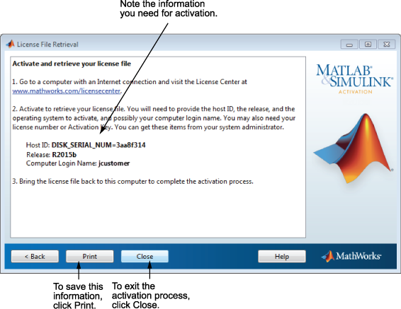

このダイアログ ボックスに表示されている情報を保存します。[印刷] をクリックして、この情報を印刷することができます。印刷した情報をもってインターネットに接続されているコンピューターに移動し、MathWorks® Web サイトのライセンス センターにアクセスします。MathWorks では、この情報を使用してライセンス ファイルとライセンス用のファイル インストール キーを生成します。ソフトウェアをインストールしてアクティベーションを行うコンピューターに戻る際には、この情報を使用してください。アクティベーション アプリケーションを終了するには、[終了] をクリックします。
メモ: インストールのアクティベーションはまだ行われていません。ライセンス ファイルを取得するまでは MATLAB® を実行できません。 |
